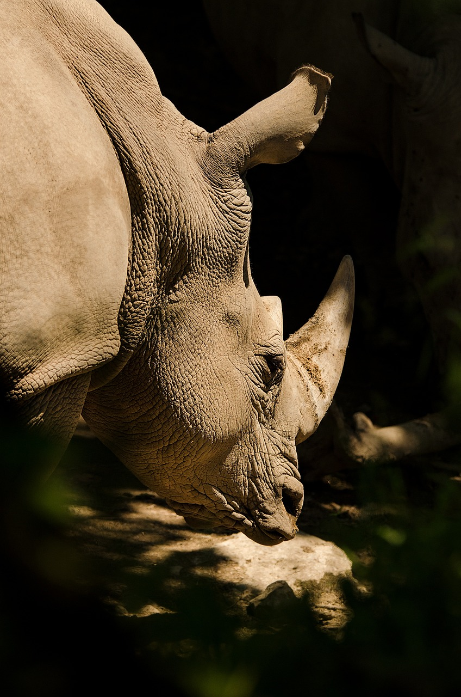

-
Chimpancé
La caza furtiva, enfermedades, expansión agrícola y pérdida de hábitat han reducido significativamente la población de chimpancés en África subsahariana en más del 50% desde 1975, tendencia que continuará. Su dieta es principalmente fruta, complementada con vegetación, insectos y mamíferos, siendo los más carnívoros entre los grandes simios. Por ello, están considerados en peligro de extinción.
-

Tigre
El tigre, catalogado como en peligro de extinción, ha visto disminuir su población en al menos nueve de los 13 países en los últimos 30 años. Su dieta principal incluye cerdos salvajes y ciervos, pero también consumen aves, peces e insectos cuando escasean las presas. Se encuentran en bosques tropicales y templados de Asia, Rusia y China, y se han adaptado a hábitats diversos, como manglares y selvas tropicales.
-
Ballena Azúl
La ballena azul ha experimentado una reducción del 8% en los últimos años, situándose en peligro crítico de extinción. La antigua población antártica ha sido drásticamente reducida. Su dieta consiste casi exclusivamente en pequeños crustáceos, y sus patrones migratorios varían; algunas permanecen en áreas de alta productividad todo el año, mientras que otras realizan largas migraciones entre aguas tropicales y áreas de alimentación en latitudes altas.
-
Lémur
Más de 80 especies de lémures están en peligro crítico o en peligro de extinción, y más de 30 son vulnerables, incluyendo el lémur dorado y el de cola anillada. La principal causa es la pérdida de hábitat debido a la agricultura y quema de bambú, que es una fuente de alimento clave. La caza también contribuye a su declive.
-
Vaquita Marina
Ubicada únicamente en el norte del Golfo de California, en México, esta especie está en peligro crítico de extinción porque se estima, entre otras cosas, que la población total es de alrededor de 10. La vaquita, que vive en un ambiente marino de menos de 50 metros de profundidad, se alimenta de una variedad de peces, calamares y crustáceos.
-

Rinoceronte de Sumatra
El rinoceronte de Sumatra está en peligro crítico de extinción con una disminución de más del 80% en tres generaciones y solo quedan 250 adultos. Se estima una probabilidad del 90% de extinción en 60 años. Las principales causas son la caza furtiva y la pérdida de hábitat. Habita en bosques tropicales, principalmente en áreas montañosas cerca de fuentes de agua, y su movimiento varía según la estación.
-
Gorila occidental
Los gorilas occidentales están en peligro crítico de extinción debido a una disminución de más del 80% en su población, causada por la caza ilegal, enfermedades y pérdida de hábitat. Se espera que esta reducción continúe hasta 2071, agravada por la agricultura industrial y el cambio climático. Estos gorilas son diurnos, semiterrestres y construyen nidos para dormir, mayormente en el suelo.
-

Pangolín
Varios tipos de pangolines, como el indio y el chino, están en peligro de extinción debido a la sobreexplotación, con una posible reducción del 50% en tres generaciones (2019-2043). Son cazados para consumo local y tráfico internacional, especialmente de sus escamas, principalmente en China. Aunque los esfuerzos para reducir la demanda han sido efectivos, se necesita una mayor aplicación de la ley para evitar su sobreexplotación.
-
Mono Tití
Este animal está en peligro crítico de extinción, con una reducción de más del 80% en los últimos 25 años debido a la deforestación y la expansión agrícola. Es una especie monógama que vive en pequeños grupos familiares y se alimenta principalmente de frutas e insectos.
-

Elefante Africano
Este elefante está en peligro crítico de extinción, con una reducción de más del 80% de la población continental en las últimas tres generaciones (93 años), lo cual se considera irreversible. Las principales causas incluyen la pérdida de hábitat debido a la expansión humana.
-

Lobo Rojo
El lobo reintroducido en Carolina del Norte tras extinguirse en estado salvaje en 1980 alcanzó más de 150 individuos en 2000. Sin embargo, en 2016 el esfuerzo de reintroducción se limitó a tierras públicas, donde solo caben 20-30 lobos. Si esta restricción continúa, los lobos fuera de esa área podrían no recibir protección federal y enfrentan amenazas, como la mortalidad causada por humanos, que es una de las mayores preocupaciones para su supervivencia en la naturaleza.
-
Hámster Común
El hámster común está en peligro crítico de extinción debido a una disminución del 50% anual en su tasa de reproducción, con riesgo de desaparecer en 17 años. Su rango ha disminuido en Europa y Rusia. Originalmente habitaba estepas y pastizales, pero ahora se encuentra en hábitats como tierras de cultivo, bordes de campos y caminos, prados, jardines y huertos. Su dieta se compone de plantas, semillas, invertebrados y pequeños vertebrados.